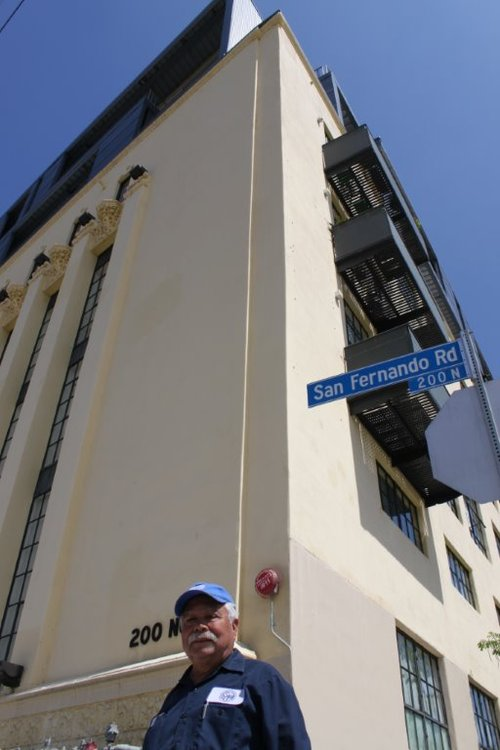

By Chris Sariego
The St. Vincent de Paul Thrift Store at 210 North Avenue 21 in Lincoln Heights celebrates 45 years at its location in 2014 - a former paint factory. Employee Alfonso Topete has been on site exactly just as long, since he immigrated from Mexico. He remembers when the store was housed in the yellow, former factory building next door at 200 N. San Fernando Road, now upscale condos.
“The first floor was the store,” said Topete. “In the furniture section there were no tags on anything. You would just say, ‘How much is this?’ And they’d say, ‘Well, how about this much?’”
In the late 1970s the thrift store moved to Avenue 21, the former factory’s warehouse and shipping area. If you look closely at the front of the current thrift store, you can see it was once a loading dock.
Many store employees such as Topete, have strong generational ties to the neighborhood, as do many of the store’s customers. “We sell 75% more than before,” said Topete. “There are a lot more customers and new faces now.”
Consider becoming a shopper at the St. Vincent de Paul Thrift Store. The proceeds of your purchase will help the impoverished and homeless in our area. For more information watch the “More Than a Thrift Store” video at www.svdpla.org.